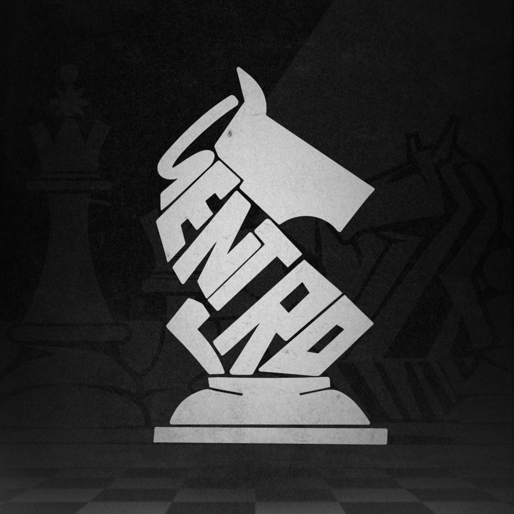

SENTRO PARTYLIST
SENTRO is the longest-running political party in De La Salle Lipa Senior High School Community, putting the Lipasallian at the center of its purpose since SHS’ inception at DLSL way back 2017. Magbigay ng serbisyong tapat is what has long been the guiding principle of this party, driving the Senior Student Coordinating Board toward ever greater heights with each successive SENTRO leadership.